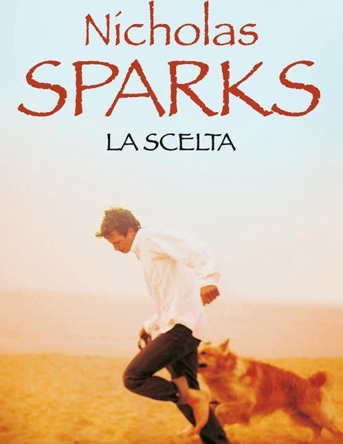

1.
La scelta (N. Sparks)
Come molti altri libri dello stesso autore, La scelta è una storia che vi farà piangere. È inevitabile appassionarsi alla vicenda di Travis e Gabbi, due giovani apparentemente molto diversi, ma uniti dalla stessa forza e determinazione. La storia si ambienta in una piccola cittadina circondata da meravigliosi paesaggi, Gabbi si è appena trasferita e fatica ad ambientarsi, mentre Travis è nato e cresciuto lì nella sua amata Beaufort, North Carolina.
